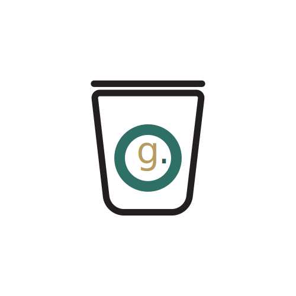
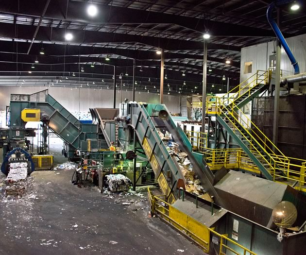

Defining Ontario's Future of Waste Management

Why
Typically every year in the last decade, the City of Toronto manages over 900,000 tonnes of waste. this requires money, energy and space in our community (City of Toronto).
We asked Toronto if the citys garbage sorting system is effective and efficient and only 18% agreed.
There can be immense brand and marketing value in creating and maintaining positive public relations.
Why industry 4.0 in waste management?
- Automation across a network of AI devices
- Optimized process lead to a more cost effective process.
- Smaller environmental footprint then the conventional process.
- Smaller environmental footprint then the conventional process.
- Data generated inside and outside facillity for continous analysis and preformance rating.
Approach
Net.Gre approach is to develop a new solid waste and recycable sorting system and renewable energy infrastructure to allow the garbage to be efficiently sorted for inceneration & ready for contact with waste to energy technologies.
net.Green is a industry 4.0 facillity built around a network of connected devices to capture raw data within the infrastructure .
Smart
A connected facility that runs on smart technologies.
Renewable
A facility that runs on ontario's own local renewable energy.

Green
A more effective and efficient way of sorting garbage.
Atonomouse
A atonomouse connected network internaly and externally
Research
precident 01:
MIT- Converting trash into fuel

The MIT trash system uses a multiple high-temperature processes by subjecting garbage to plasma arcs to break down organic materials into syngas, a mixture of hydrogen and carbon monoxide.
Syngas can either be directly burned in gas turbines to produce electricity, or it can be converted into other fuels, including gasoline and ethanol.
Metals and other inorganic materials in garbage can be isolated and recycled. The combination of high temperatures and an oxygen-poor environment that prevents the garbage from catching fire eliminates the production of dioxins and furans, two toxic chemicals produced during incineration.
Therefore, waste is turned into fuel
precident 02:
Hehagon Smart Factory
An important element of a ‘smart factory’ is Connected Devices. Everyone has heard of the ‘Internet of Things’ (IoT) when it comes to consumer devices like thermostats, light bulbs, and smart refrigerators in our homes. But this concept also makes sense for our customers like you as you seek to use advanced new technology to connect all of your devices in your factory so that you can monitor and control them remotely, and, by looking at production data and sensor trends even predict when the machines will need servicing.
Another promising technology under the ‘smart factory’ umbrella is Artificial Intelligence (AI) – sometimes called machine learning (ML). It's now possible to use the advanced mathematical techniques of AI/ML to analyze the massive amounts of data that you have collected over time in order to gain some insight, make some predictions, and potentially even take direct autonomous action without human intervention.
These industry 4.0 solutions implemented in a waste management facility can be extreamly impactful in the communities long run. It will allow a connected ecosystem of smart devices that will allow the facility's internal and external elements to operate at maximum efficiency while keeping sustainability a top priority.
Moodboard:

Questions
Thank you for reading! Test your memory and new knowledge about net.green and its motives.